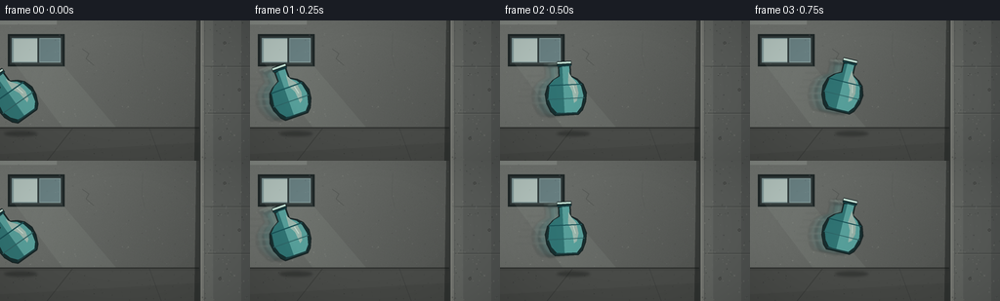
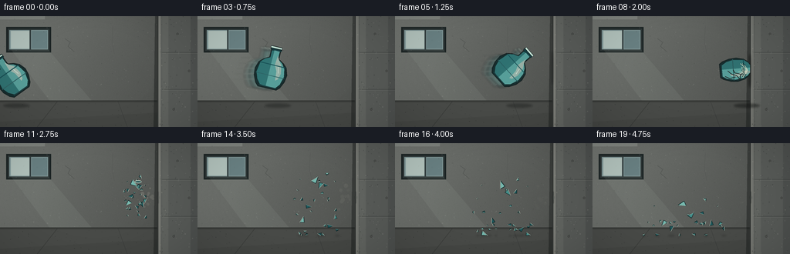

CODING AGENTS AS PIXEL WORLD MODELS
traex/GPT-5.6-Sol · phygen_132
点击播放 · 原生 RGB 像素
逐轮保存的候选
回放视频、检查图与代码变化。
每份候选均可单独播放。实际图片检查记录在下方工具轨迹中。
候选 01播放与检查图
点击播放 · 原生 RGB 像素

展开代码变化
--- 上一保存版本
+++ 本次保存版本
@@ -0,0 +1,305 @@
+from pathlib import Path
+import math
+import numpy as np
+from PIL import Image, ImageDraw, ImageFilter
+import artifact_io
+
+# Deterministic procedural, hand-painted simulation of a fast ceramic vase impact.
+W, H, N = 256, 144, 20
+S = 4
+rng = np.random.default_rng(132)
+
+
+def sc(v):
+ return int(round(v * S))
+
+def pts(seq):
+ return [(sc(x), sc(y)) for x, y in seq]
+
+def line(draw, seq, fill, width=1):
+ draw.line(pts(seq), fill=fill, width=max(1, sc(width)), joint="curve")
+
+def poly(draw, seq, fill, outline=None, width=1):
+ draw.polygon(pts(seq), fill=fill)
+ if outline:
+ draw.line(pts(list(seq) + [seq[0]]), fill=outline, width=max(1, sc(width)), joint="curve")
+
+def ellipse(draw, box, fill, outline=None, width=1):
+ b = tuple(sc(v) for v in box)
+ draw.ellipse(b, fill=fill, outline=outline, width=max(1, sc(width)))
+
+# Static photographic/painterly industrial interior at supersampled resolution.
+yy, xx = np.mgrid[0:H*S, 0:W*S]
+# Back plaster wall, warm-gray and lit from upper left.
+base = np.zeros((H*S, W*S, 3), dtype=np.float32)
+vertical = yy / (H*S)
+light = np.clip(1.12 - 0.32 * (xx/(W*S)) - 0.10*vertical, 0.65, 1.2)
+noise = rng.normal(0, 2.0, (H*S, W*S))
+back = np.array([102, 105, 101], np.float32)
+for c in range(3):
+ base[..., c] = back[c] * light + noise
+base = np.clip(base, 0, 255).astype(np.uint8)
+static = Image.fromarray(base, 'RGB')
+d = ImageDraw.Draw(static, 'RGBA')
+
+# High, hazy window light and workshop recesses.
+d.rectangle((sc(0), sc(0), sc(58), sc(4)), fill=(158,164,157,90))
+d.rectangle((sc(8), sc(14), sc(66), sc(47)), fill=(46,55,55,255), outline=(22,29,30,190), width=sc(2))
+d.rectangle((sc(12), sc(18), sc(62), sc(43)), fill=(128,151,151,255))
+d.rectangle((sc(14), sc(19), sc(38), sc(42)), fill=(181,196,189,225))
+d.rectangle((sc(41), sc(19), sc(61), sc(42)), fill=(103,126,128,255))
+line(d, [(39,18),(39,43)], (45,56,57,230), 2)
+# Window cast light beam.
+poly(d, [(14,43),(62,43),(124,116),(69,116)], (173,185,174,24))
+# Fine plaster mottling.
+for _ in range(180):
+ x = float(rng.uniform(0, 205)); y = float(rng.uniform(3, 113))
+ r = float(rng.uniform(.15, .65)); a = int(rng.integers(12,34))
+ c = int(rng.choice([-1,1]))
+ col = (220,222,211,a) if c > 0 else (30,35,34,a)
+ ellipse(d, (x-r,y-r,x+r,y+r), col)
+# Back-wall cracks/scuffs, understated.
+line(d, [(84,29),(91,34),(88,39),(96,46)], (55,58,55,75), .7)
+line(d, [(146,13),(145,34),(148,49)], (59,62,59,55), .6)
+
+# Concrete floor begins at y=112 with perspective and contact line.
+poly(d, [(0,110),(207,110),(207,144),(0,144)], (68,70,67,255))
+line(d, [(0,110),(207,110)], (40,42,40,210), 1.3)
+# Floor light gradient bands.
+poly(d, [(0,113),(207,113),(207,125),(0,137)], (141,145,135,14))
+line(d, [(74,111),(48,144)], (34,36,34,80), .7)
+line(d, [(153,111),(165,144)], (34,36,34,65), .7)
+for _ in range(100):
+ x=float(rng.uniform(0,207)); y=float(rng.uniform(112,144)); r=float(rng.uniform(.12,.55))
+ ellipse(d,(x-r,y-r,x+r,y+r),(25,27,25,int(rng.integers(20,60))))
+
+# Massive, sturdy concrete wall/slab at right: deep edge and block seams.
+# Cast shadow on room side.
+poly(d, [(201,0),(208,0),(208,144),(199,144)], (18,21,20,110))
+# Thin bevel at impact plane.
+poly(d, [(204,0),(211,0),(211,144),(204,144)], (111,113,108,255))
+# Main wall face.
+poly(d, [(209,0),(256,0),(256,144),(209,144)], (87,90,87,255))
+# Directional shading on slab.
+poly(d, [(210,0),(218,0),(218,144),(210,144)], (151,151,142,36))
+poly(d, [(247,0),(256,0),(256,144),(247,144)], (24,27,27,35))
+# Concrete formwork seams and tie holes.
+for y in (47, 95):
+ line(d, [(210,y),(256,y)], (45,48,47,115), .8)
+ line(d, [(210,y+1),(256,y+1)], (145,146,137,45), .5)
+for x,y in [(230,23),(245,71),(225,121)]:
+ ellipse(d,(x-1.6,y-1.6,x+1.6,y+1.6),(49,51,49,150))
+ ellipse(d,(x-.7,y-.7,x+.7,y+.7),(113,115,109,90))
+# Aggregate speckle.
+for _ in range(165):
+ x=float(rng.uniform(207,256)); y=float(rng.uniform(0,144)); r=float(rng.uniform(.12,.72))
+ if rng.random()<.52: col=(190,190,178,int(rng.integers(18,50)))
+ else: col=(25,29,28,int(rng.integers(20,65)))
+ ellipse(d,(x-r,y-r,x+r,y+r),col)
+# Wall edge line emphasizes impenetrable plane.
+line(d, [(204.5,0),(204.5,144)], (45,48,46,235), 1.2)
+line(d, [(206.2,0),(206.2,144)], (171,171,159,120), .6)
+
+# Pre-render shadow-free static background with slight lens softness.
+static = static.filter(ImageFilter.GaussianBlur(radius=.12*S))
+
+# Shard properties and deterministic physics, from impact frame 8 onward.
+frag_rng = np.random.default_rng(7641)
+frags=[]
+for i in range(31):
+ # All fragments rebound away from the unyielding wall (negative vx).
+ vx = -float(frag_rng.uniform(2.3, 12.5))
+ vy = float(frag_rng.uniform(-10.5, 5.3))
+ if i < 4:
+ vx = [-6.3,-8.7,-4.4,-10.1][i]
+ vy = [-8.8,-4.0,1.0,-1.2][i]
+ frags.append({
+ 'x': 197.0+float(frag_rng.uniform(-1.3,1.0)),
+ 'y': 70.0+float(frag_rng.uniform(-7,9)),
+ 'vx':vx,'vy':vy,
+ 'size':float(frag_rng.uniform(1.0,4.0) if i>4 else frag_rng.uniform(4.2,7.5)),
+ 'ang':float(frag_rng.uniform(0,math.tau)),
+ 'spin':float(frag_rng.uniform(-1.0,1.0)),
+ 'tone':int(frag_rng.integers(0,3))
+ })
+
+# Simulate fragment state for every video frame, with floor bounces.
+states={8:[dict(f) for f in frags]}
+cur=[dict(f) for f in frags]
+for frame in range(9,N):
+ nxt=[]
+ for q in cur:
+ z=dict(q)
+ z['x'] += z['vx']
+ z['y'] += z['vy']
+ z['vy'] += 2.05
+ z['ang'] += z['spin']
+ floor=119.5-z['size']*.35
+ if z['y'] > floor:
+ z['y']=floor
+ if abs(z['vy'])>1.1:
+ z['vy']=-abs(z['vy'])*0.43
+ z['vx']*=0.76
+ z['spin']*=0.72
+ else:
+ z['vy']=0; z['vx']*=0.42; z['spin']*=0.45
+ # Hard wall collision guard.
+ if z['x']+z['size']>203.5:
+ z['x']=203.5-z['size']; z['vx']=-abs(z['vx'])*.65
+ nxt.append(z)
+ states[frame]=nxt
+ cur=nxt
+
+
+def vase_layer(cx, cy, angle, alpha=255, squash_x=1.0, cracked=False):
+ """Glazed turquoise ceramic vase with dimensional shading, transformed in world."""
+ layer=Image.new('RGBA',(W*S,H*S),(0,0,0,0))
+ ld=ImageDraw.Draw(layer,'RGBA')
+ ca,sa=math.cos(angle),math.sin(angle)
+ def tr(x,y):
+ x*=squash_x
+ return (cx+x*ca-y*sa, cy+x*sa+y*ca)
+ silhouette=[(-7,-29),(7,-29),(7,-25),(6,-24),(6,-14),(13,-10),(18,-5),(21,4),(20,13),(16,22),(12,26),(-12,26),(-16,22),(-20,13),(-21,4),(-18,-5),(-13,-10),(-6,-14),(-6,-24),(-7,-25)]
+ # black contact outline then rich glaze base
+ poly(ld,[tr(x,y) for x,y in silhouette],(22,46,47,alpha),(18,30,31,min(alpha,230)),1.15)
+ # broad directional glaze bands clipped approximately as inner transformed polygons
+ left=[(-16,-6),(-11,-11),(-5,-14),(-5,-23),(-2,-24),(-2,24),(-10,23),(-15,17),(-18,8)]
+ mid=[(-2,-24),(5,-24),(5,-14),(12,-9),(16,-3),(18,7),(15,18),(10,24),(-2,24)]
+ poly(ld,[tr(x,y) for x,y in left],(44,114,114,int(alpha*.94)))
+ poly(ld,[tr(x,y) for x,y in mid],(86,159,154,int(alpha*.97)))
+ # soft highlight streak
+ poly(ld,[tr(4,-18),tr(7,-12),tr(11,-7),tr(13,4),tr(11,12),tr(8,14),tr(7,2),tr(3,-6)],(188,225,211,int(alpha*.62)))
+ # blue decorative bands and lip/base rings
+ line(ld,[tr(-7,-28),tr(7,-28)],(197,227,214,alpha),2.0)
+ line(ld,[tr(-7,-25),tr(7,-25)],(13,67,74,int(alpha*.95)),1.1)
+ line(ld,[tr(-17,-5),tr(17,-5)],(14,76,82,int(alpha*.88)),1.25)
+ line(ld,[tr(-19,9),tr(19,9)],(25,91,95,int(alpha*.72)),1.0)
+ line(ld,[tr(-11,24),tr(11,24)],(17,56,60,int(alpha*.85)),1.2)
+ # Tiny specular glint.
+ line(ld,[tr(8,-4),tr(10,4)],(229,245,230,int(alpha*.78)),.7)
+ if cracked:
+ # Cracks converge at front/right contact side.
+ for seq in [[(18,1),(10,0),(5,-5),(0,-3)],[(18,1),(11,5),(7,12),(1,16)],[(13,7),(15,14),(11,20)],[(9,0),(6,7),(0,9)]]:
+ line(ld,[tr(x,y) for x,y in seq],(24,34,34,int(alpha*.9)),.9)
+ return layer
+
+
+def draw_fragment(draw,q,opacity=255):
+ x,y,s,a=q['x'],q['y'],q['size'],q['ang']
+ ca,sa=math.cos(a),math.sin(a)
+ local=[(-s*.75,-s*.38),(s*.82,0),(-s*.45,s*.62)]
+ p=[]
+ for lx,ly in local:
+ p.append((x+lx*ca-ly*sa,y+lx*sa+ly*ca))
+ cols=[(68,142,138,opacity),(118,184,174,opacity),(29,87,91,opacity)]
+ poly(draw,p,cols[q['tone']],(15,38,39,min(230,opacity)),.65)
+ # one pale ceramic fracture edge
+ line(draw,[p[0],p[1]],(211,226,207,min(220,opacity)),.48)
+
+
+def render(frame):
+ im=static.copy().convert('RGBA')
+ # Ground / wall contact shadows change during event.
+ shadow=Image.new('RGBA',im.size,(0,0,0,0)); sd=ImageDraw.Draw(shadow,'RGBA')
+
+ # Trajectory reaches wall at frame 8.
+ xs=[13,39,67,96,125,153,176,189,192]
+ ys=[77,74,71,68,66,65,66,68,69]
+ angles=[-.62,-.34,-.05,.24,.54,.84,1.13,1.39,1.48]
+
+ if frame <= 8:
+ cx,cy=xs[frame],ys[frame]
+ # fast moving floor shadow
+ shx=cx+8; shy=116
+ ellipse(sd,(shx-17,shy-2.6,shx+17,shy+2.8),(10,13,12,80 if frame<8 else 115))
+ # Wall shadow grows dramatically before impact.
+ if frame>=5:
+ clos=max(0,(cx-145)/47)
+ ellipse(sd,(202.1,cy-20,205.2,cy+24),(12,15,14,int(45+75*clos)))
+ else:
+ # settled debris shadows
+ for q in states[frame]:
+ if q['y']>109 and -5<q['x']<207:
+ ellipse(sd,(q['x']-q['size'],119,q['x']+q['size'],121),(8,10,9,55))
+ shadow=shadow.filter(ImageFilter.GaussianBlur(sc(1.3)))
+ im=Image.alpha_composite(im,shadow)
+
+ # Dust and impact residue behind shards.
+ effects=Image.new('RGBA',im.size,(0,0,0,0)); ed=ImageDraw.Draw(effects,'RGBA')
+ if frame>=8:
+ t=frame-8
+ # Chalky burst constrained to room side; wall remains structurally intact.
+ count=max(0,34-t*3)
+ dust_rng=np.random.default_rng(990+frame)
+ for i in range(count):
+ ang=dust_rng.uniform(math.pi*.55,math.pi*1.45)
+ rr=dust_rng.uniform(1,5+min(t,4)*6)
+ x=min(202.8,200+math.cos(ang)*rr-t*.35)
+ y=70+math.sin(ang)*rr*.66+dust_rng.normal(0,1)
+ rad=dust_rng.uniform(.5,2.2)*(1+.08*t)
+ a=max(8,int(92-t*12))*dust_rng.uniform(.45,1)
+ ellipse(ed,(x-rad,y-rad,x+rad,y+rad),(198,194,177,int(a)))
+ # immovable wall gets only a small scuff, no break or displacement
+ if t>=1:
+ line(ed,[(205.1,63),(205.1,78)],(43,53,51,min(125,50+t*10)),1.05)
+ ellipse(ed,(203.8,68,206.6,73),(37,47,45,min(80,30+t*5)))
+ effects=effects.filter(ImageFilter.GaussianBlur(sc(.45)))
+ im=Image.alpha_composite(im,effects)
+
+ if frame < 8:
+ cx,cy=xs[frame],ys[frame]
+ # Motion ghosts and linear streaks unequivocally communicate a forceful throw.
+ if frame>0:
+ blur=Image.new('RGBA',im.size,(0,0,0,0))
+ for j,off in enumerate((14,8)):
+ ghost=vase_layer(cx-off,cy+1,angles[frame]-.06*j,alpha=32 if j==0 else 55)
+ blur=Image.alpha_composite(blur,ghost)
+ bd=ImageDraw.Draw(blur,'RGBA')
+ for k in range(5):
+ yy0=cy-14+k*7
+ line(bd,[(max(0,cx-39-k*3),yy0),(cx-20,yy0-.5)],(177,218,207,50-k*5),.65)
+ blur=blur.filter(ImageFilter.GaussianBlur(sc(.65)))
+ im=Image.alpha_composite(im,blur)
+ im=Image.alpha_composite(im,vase_layer(cx,cy,angles[frame]))
+ elif frame==8:
+ # The instant of impact: vase visibly buckles against the wall and crazes.
+ # A compressed ghost behind intensifies the collision without penetrating concrete.
+ im=Image.alpha_composite(im,vase_layer(191.2,69,1.49,255,.72,True))
+ flash=Image.new('RGBA',im.size,(0,0,0,0)); fd=ImageDraw.Draw(flash,'RGBA')
+ # first chips fly back while main body remains legible
+ for q in states[8][7:18]:
+ qq=dict(q); qq['x']-=float(frag_rng.uniform(0,3))
+ draw_fragment(fd,qq,210)
+ # short radial stress/dust rays
+ for a in np.linspace(2.15,4.15,8):
+ r=7+3*(1+math.sin(a*7))
+ line(fd,[(201,70),(201+math.cos(a)*r,70+math.sin(a)*r)],(225,220,194,165),.7)
+ im=Image.alpha_composite(im,flash)
+ else:
+ # Fragments occupy the exact prior vase location and obey gravity/bounces.
+ debris=Image.new('RGBA',im.size,(0,0,0,0)); dd=ImageDraw.Draw(debris,'RGBA')
+ for q in states[frame]:
+ if -8<q['x']<206 and q['y']<135:
+ draw_fragment(dd,q,255)
+ # neck ring is a uniquely recognizable vase remnant for first few post-impact frames
+ t=frame-8
+ if t<=5:
+ rx=197-6.0*t; ry=57-5.5*t+1.05*t*t
+ if ry<119:
+ ellipse(dd,(rx-4.5,ry-1.8,rx+4.5,ry+1.8),(41,104,106,245),(210,228,211,225),.7)
+ line(dd,[(rx-4,ry),(rx+4,ry)],(18,49,51,220),.65)
+ im=Image.alpha_composite(im,debris)
+
+ # Foreground vignette and a subtle warm highlight at the floor edge.
+ arr=np.asarray(im.convert('RGB')).astype(np.float32)
+ yh,xh=np.mgrid[0:H*S,0:W*S]
+ nx=(xh-W*S*.48)/(W*S*.72); ny=(yh-H*S*.48)/(H*S*.83)
+ vig=np.clip(1-.18*np.maximum(0,nx*nx+ny*ny-.20),.76,1)
+ arr*=vig[...,None]
+ out=Image.fromarray(np.clip(arr,0,255).astype(np.uint8)).resize((W,H),Image.Resampling.LANCZOS)
+ return np.asarray(out,dtype=np.uint8)
+
+frames=np.stack([render(i) for i in range(N)],axis=0)
+case_dir=Path(__file__).resolve().parent
+artifact_io.save(frames,case_dir)
+print(f"saved {len(frames)} RGB frames at {W}x{H}")
候选 02播放与检查图
点击播放 · 原生 RGB 像素

展开代码变化
--- 上一保存版本
+++ 本次保存版本
@@ -181,6 +181,11 @@
# Cracks converge at front/right contact side.
for seq in [[(18,1),(10,0),(5,-5),(0,-3)],[(18,1),(11,5),(7,12),(1,16)],[(13,7),(15,14),(11,20)],[(9,0),(6,7),(0,9)]]:
line(ld,[tr(x,y) for x,y in seq],(24,34,34,int(alpha*.9)),.9)
+ # The concrete impact plane is an absolute occluder: even during the
+ # squash frame no ceramic pixel can visually pass through the wall.
+ la=np.asarray(layer).copy()
+ la[:,sc(204.15):,3]=0
+ layer=Image.fromarray(la,'RGBA')
return layer
可观测工具轨迹
实际执行的命令与返回图片。
命令 1exit 0
/bin/bash -lc "cat prompt.txt && printf '\\n--- RULES ---\\n' && cat GENERATION_RULES.md && printf '\\n--- SPEC ---\\n' && cat task_spec.json"
命令 2exit 0
/bin/bash -lc "find . -maxdepth 2 -type f -printf '%p\\n' | sort && printf '\\n--- binaries ---\\n' && command -v ffmpeg || true && command -v blender || true && command -v python3 || true"
命令 3exit 0
/bin/bash -lc 'cat artifact_io.py'
命令 4exit 0
/bin/bash -lc "cat > generate.py <<'PY'
from pathlib import Path
import math
import numpy as np
from PIL import Image, ImageDraw, ImageFilter
import artifact_io
# Deterministic procedural, hand-painted simulation of a fast ceramic vase impact.
W, H, N = 256, 144, 20
S = 4
rng = np.random.default_rng(132)
def sc(v):
return int(round(v * S))
def pts(seq):
return [(sc(x), sc(y)) for x, y in seq]
def line(draw, seq, fill, width=1):
draw.line(pts(seq), fill=fill, width=max(1, sc(width)), joint=\"curve\")
def poly(draw, seq, fill, outline=None, width=1):
draw.polygon(pts(seq), fill=fill)
if outline:
draw.line(pts(list(seq) + [seq[0]]), fill=outline, width=max(1, sc(width)), joint=\"curve\")
def ellipse(draw, box, fill, outline=None, width=1):
b = tuple(sc(v) for v in box)
draw.ellipse(b, fill=fill, outline=outline, width=max(1, sc(width)))
# Static photographic/painterly industrial interior at supersampled resolution.
yy, xx = np.mgrid[0:H*S, 0:W*S]
# Back plaster wall, warm-gray and lit from upper left.
base = np.zeros((H*S, W*S, 3), dtype=np.float32)
vertical = yy / (H*S)
light = np.clip(1.12 - 0.32 * (xx/(W*S)) - 0.10*vertical, 0.65, 1.2)
noise = rng.normal(0, 2.0, (H*S, W*S))
back = np.array([102, 105, 101], np.float32)
for c in range(3):
base[..., c] = back[c] * light + noise
base = np.clip(base, 0, 255).astype(np.uint8)
static = Image.fromarray(base, 'RGB')
d = ImageDraw.Draw(static, 'RGBA')
# High, hazy window light and workshop recesses.
d.rectangle((sc(0), sc(0), sc(58), sc(4)), fill=(158,164,157,90))
d.rectangle((sc(8), sc(14), sc(66), sc(47)), fill=(46,55,55,255), outline=(22,29,30,190), width=sc(2))
d.rectangle((sc(12), sc(18), sc(62), sc(43)), fill=(128,151,151,255))
d.rectangle((sc(14), sc(19), sc(38), sc(42)), fill=(181,196,189,225))
d.rectangle((sc(41), sc(19), sc(61), sc(42)), fill=(103,126,128,255))
line(d, [(39,18),(39,43)], (45,56,57,230), 2)
# Window cast light beam.
poly(d, [(14,43),(62,43),(124,116),(69,116)], (173,185,174,24))
# Fine plaster mottling.
for _ in range(180):
x = float(rng.uniform(0, 205)); y = float(rng.uniform(3, 113))
r = float(rng.uniform(.15, .65)); a = int(rng.integers(12,34))
c = int(rng.choice([-1,1]))
col = (220,222,211,a) if c > 0 else (30,35,34,a)
ellipse(d, (x-r,y-r,x+r,y+r), col)
# Back-wall cracks/scuffs, understated.
line(d, [(84,29),(91,34),(88,39),(96,46)], (55,58,55,75), .7)
line(d, [(146,13),(145,34),(148,49)], (59,62,59,55), .6)
# Concrete floor begins at y=112 with perspective and contact line.
poly(d, [(0,110),(207,110),(207,144),(0,144)], (68,70,67,255))
line(d, [(0,110),(207,110)], (40,42,40,210), 1.3)
# Floor light gradient bands.
poly(d, [(0,113),(207,113),(207,125),(0,137)], (141,145,135,14))
line(d, [(74,111),(48,144)], (34,36,34,80), .7)
line(d, [(153,111),(165,144)], (34,36,34,65), .7)
for _ in range(100):
x=float(rng.uniform(0,207)); y=float(rng.uniform(112,144)); r=float(rng.uniform(.12,.55))
ellipse(d,(x-r,y-r,x+r,y+r),(25,27,25,int(rng.integers(20,60))))
# Massive, sturdy concrete wall/slab at right: deep edge and block seams.
# Cast shadow on room side.
poly(d, [(201,0),(208,0),(208,144),(199,144)], (18,21,20,110))
# Thin bevel at impact plane.
poly(d, [(204,0),(211,0),(211,144),(204,144)], (111,113,108,255))
# Main wall face.
poly(d, [(209,0),(256,0),(256,144),(209,144)], (87,90,87,255))
# Directional shading on slab.
poly(d, [(210,0),(218,0),(218,144),(210,144)], (151,151,142,36))
poly(d, [(247,0),(256,0),(256,144),(247,144)], (24,27,27,35))
# Concrete formwork seams and tie holes.
for y in (47, 95):
line(d, [(210,y),(256,y)], (45,48,47,115), .8)
line(d, [(210,y+1),(256,y+1)], (145,146,137,45), .5)
for x,y in [(230,23),(245,71),(225,121)]:
ellipse(d,(x-1.6,y-1.6,x+1.6,y+1.6),(49,51,49,150))
ellipse(d,(x-.7,y-.7,x+.7,y+.7),(113,115,109,90))
# Aggregate speckle.
for _ in range(165):
x=float(rng.uniform(207,256)); y=float(rng.uniform(0,144)); r=float(rng.uniform(.12,.72))
if rng.random()<.52: col=(190,190,178,int(rng.integers(18,50)))
else: col=(25,29,28,int(rng.integers(20,65)))
ellipse(d,(x-r,y-r,x+r,y+r),col)
# Wall edge line emphasizes impenetrable plane.
line(d, [(204.5,0),(204.5,144)], (45,48,46,235), 1.2)
line(d, [(206.2,0),(206.2,144)], (171,171,159,120), .6)
# Pre-render shadow-free static background with slight lens softness.
static = static.filter(ImageFilter.GaussianBlur(radius=.12*S))
# Shard properties and deterministic physics, from impact frame 8 onward.
frag_rng = np.random.default_rng(7641)
frags=[]
for i in range(31):
# All fragments rebound away from the unyielding wall (negative vx).
vx = -float(frag_rng.uniform(2.3, 12.5))
vy = float(frag_rng.uniform(-10.5, 5.3))
if i < 4:
vx = [-6.3,-8.7,-4.4,-10.1][i]
vy = [-8.8,-4.0,1.0,-1.2][i]
frags.append({
'x': 197.0+float(frag_rng.uniform(-1.3,1.0)),
'y': 70.0+float(frag_rng.uniform(-7,9)),
'vx':vx,'vy':vy,
'size':float(frag_rng.uniform(1.0,4.0) if i>4 else frag_rng.uniform(4.2,7.5)),
'ang':float(frag_rng.uniform(0,math.tau)),
'spin':float(frag_rng.uniform(-1.0,1.0)),
'tone':int(frag_rng.integers(0,3))
})
# Simulate fragment state for every video frame, with floor bounces.
states={8:[dict(f) for f in frags]}
cur=[dict(f) for f in frags]
for frame in range(9,N):
nxt=[]
for q in cur:
z=dict(q)
z['x'] += z['vx']
z['y'] += z['vy']
z['vy'] += 2.05
z['ang'] += z['spin']
floor=119.5-z['size']*.35
if z['y'] > floor:
z['y']=floor
if abs(z['vy'])>1.1:
z['vy']=-abs(z['vy'])*0.43
z['vx']*=0.76
z['spin']*=0.72
else:
z['vy']=0; z['vx']*=0.42; z['spin']*=0.45
# Hard wall collision guard.
if z['x']+z['size']>203.5:
z['x']=203.5-z['size']; z['vx']=-abs(z['vx'])*.65
nxt.append(z)
states[frame]=nxt
cur=nxt
def vase_layer(cx, cy, angle, alpha=255, squash_x=1.0, cracked=False):
\"\"\"Glazed turquoise ceramic vase with dimensional shading, transformed in world.\"\"\"
layer=Image.new('RGBA',(W*S,H*S),(0,0,0,0))
ld=ImageDraw.Draw(layer,'RGBA')
ca,sa=math.cos(angle),math.sin(angle)
def tr(x,y):
x*=squash_x
return (cx+x*ca-y*sa, cy+x*sa+y*ca)
silhouette=[(-7,-29),(7,-29),(7,-25),(6,-24),(6,-14),(13,-10),(18,-5),(21,4),(20,13),(16,22),(12,26),(-12,26),(-16,22),(-20,13),(-21,4),(-18,-5),(-13,-10),(-6,-14),(-6,-24),(-7,-25)]
# black contact outline then rich glaze base
poly(ld,[tr(x,y) for x,y in silhouette],(22,46,47,alpha),(18,30,31,min(alpha,230)),1.15)
# broad directional glaze bands clipped approximately as inner transformed polygons
left=[(-16,-6),(-11,-11),(-5,-14),(-5,-23),(-2,-24),(-2,24),(-10,23),(-15,17),(-18,8)]
mid=[(-2,-24),(5,-24),(5,-14),(12,-9),(16,-3),(18,7),(15,18),(10,24),(-2,24)]
poly(ld,[tr(x,y) for x,y in left],(44,114,114,int(alpha*.94)))
poly(ld,[tr(x,y) for x,y in mid],(86,159,154,int(alpha*.97)))
# soft highlight streak
poly(ld,[tr(4,-18),tr(7,-12),tr(11,-7),tr(13,4),tr(11,12),tr(8,14),tr(7,2),tr(3,-6)],(188,225,211,int(alpha*.62)))
# blue decorative bands and lip/base rings
line(ld,[tr(-7,-28),tr(7,-28)],(197,227,214,alpha),2.0)
line(ld,[tr(-7,-25),tr(7,-25)],(13,67,74,int(alpha*.95)),1.1)
line(ld,[tr(-17,-5),tr(17,-5)],(14,76,82,int(alpha*.88)),1.25)
line(ld,[tr(-19,9),tr(19,9)],(25,91,95,int(alpha*.72)),1.0)
line(ld,[tr(-11,24),tr(11,24)],(17,56,60,int(alpha*.85)),1.2)
# Tiny specular glint.
line(ld,[tr(8,-4),tr(10,4)],(229,245,230,int(alpha*.78)),.7)
if cracked:
# Cracks converge at front/right contact side.
for seq in [[(18,1),(10,0),(5,-5),(0,-3)],[(18,1),(11,5),(7,12),(1,16)],[(13,7),(15,14),(11,20)],[(9,0),(6,7),(0,9)]]:
line(ld,[tr(x,y) for x,y in seq],(24,34,34,int(alpha*.9)),.9)
return layer
def draw_fragment(draw,q,opacity=255):
x,y,s,a=q['x'],q['y'],q['size'],q['ang']
ca,sa=math.cos(a),math.sin(a)
local=[(-s*.75,-s*.38),(s*.82,0),(-s*.45,s*.62)]
p=[]
for lx,ly in local:
p.append((x+lx*ca-ly*sa,y+lx*sa+ly*ca))
cols=[(68,142,138,opacity),(118,184,174,opacity),(29,87,91,opacity)]
poly(draw,p,cols[q['tone']],(15,38,39,min(230,opacity)),.65)
# one pale ceramic fracture edge
line(draw,[p[0],p[1]],(211,226,207,min(220,opacity)),.48)
def render(frame):
im=static.copy().convert('RGBA')
# Ground / wall contact shadows change during event.
shadow=Image.new('RGBA',im.size,(0,0,0,0)); sd=ImageDraw.Draw(shadow,'RGBA')
# Trajectory reaches wall at frame 8.
xs=[13,39,67,96,125,153,176,189,192]
ys=[77,74,71,68,66,65,66,68,69]
angles=[-.62,-.34,-.05,.24,.54,.84,1.13,1.39,1.48]
if frame <= 8:
cx,cy=xs[frame],ys[frame]
# fast moving floor shadow
shx=cx+8; shy=116
ellipse(sd,(shx-17,shy-2.6,shx+17,shy+2.8),(10,13,12,80 if frame<8 else 115))
# Wall shadow grows dramatically before impact.
if frame>=5:
clos=max(0,(cx-145)/47)
ellipse(sd,(202.1,cy-20,205.2,cy+24),(12,15,14,int(45+75*clos)))
else:
# settled debris shadows
for q in states[frame]:
if q['y']>109 and -5<q['x']<207:
ellipse(sd,(q['x']-q['size'],119,q['x']+q['size'],121),(8,10,9,55))
shadow=shadow.filter(ImageFilter.GaussianBlur(sc(1.3)))
im=Image.alpha_composite(im,shadow)
# Dust and impact residue behind shards.
effects=Image.new('RGBA',im.size,(0,0,0,0)); ed=ImageDraw.Draw(effects,'RGBA')
if frame>=8:
t=frame-8
# Chalky burst constrained to room side; wall remains structurally intact.
count=max(0,34-t*3)
dust_rng=np.random.default_rng(990+frame)
for i in range(count):
ang=dust_rng.uniform(math.pi*.55,math.pi*1.45)
rr=dust_rng.uniform(1,5+min(t,4)*6)
x=min(202.8,200+math.cos(ang)*rr-t*.35)
y=70+math.sin(ang)*rr*.66+dust_rng.normal(0,1)
rad=dust_rng.uniform(.5,2.2)*(1+.08*t)
a=max(8,int(92-t*12))*dust_rng.uniform(.45,1)
ellipse(ed,(x-rad,y-rad,x+rad,y+rad),(198,194,177,int(a)))
# immovable wall gets only a small scuff, no break or displacement
if t>=1:
line(ed,[(205.1,63),(205.1,78)],(43,53,51,min(125,50+t*10)),1.05)
ellipse(ed,(203.8,68,206.6,73),(37,47,45,min(80,30+t*5)))
effects=effects.filter(ImageFilter.GaussianBlur(sc(.45)))
im=Image.alpha_composite(im,effects)
if frame < 8:
cx,cy=xs[frame],ys[frame]
# Motion ghosts and linear streaks unequivocally communicate a forceful throw.
if frame>0:
blur=Image.new('RGBA',im.size,(0,0,0,0))
for j,off in enumerate((14,8)):
ghost=vase_layer(cx-off,cy+1,angles[frame]-.06*j,alpha=32 if j==0 else 55)
blur=Image.alpha_composite(blur,ghost)
bd=ImageDraw.Draw(blur,'RGBA')
for k in range(5):
yy0=cy-14+k*7
line(bd,[(max(0,cx-39-k*3),yy0),(cx-20,yy0-.5)],(177,218,207,50-k*5),.65)
blur=blur.filter(ImageFilter.GaussianBlur(sc(.65)))
im=Image.alpha_composite(im,blur)
im=Image.alpha_composite(im,vase_layer(cx,cy,angles[frame]))
elif frame==8:
# The instant of impact: vase visibly buckles against the wall and crazes.
# A compressed ghost behind intensifies the collision without penetrating concrete.
im=Image.alpha_composite(im,vase_layer(191.2,69,1.49,255,.72,True))
flash=Image.new('RGBA',im.size,(0,0,0,0)); fd=ImageDraw.Draw(flash,'RGBA')
# first chips fly back while main body remains legible
for q in states[8][7:18]:
qq=dict(q); qq['x']-=float(frag_rng.uniform(0,3))
draw_fragment(fd,qq,210)
# short radial stress/dust rays
for a in np.linspace(2.15,4.15,8):
r=7+3*(1+math.sin(a*7))
line(fd,[(201,70),(201+math.cos(a)*r,70+math.sin(a)*r)],(225,220,194,165),.7)
im=Image.alpha_composite(im,flash)
else:
# Fragments occupy the exact prior vase location and obey gravity/bounces.
debris=Image.new('RGBA',im.size,(0,0,0,0)); dd=ImageDraw.Draw(debris,'RGBA')
for q in states[frame]:
if -8<q['x']<206 and q['y']<135:
draw_fragment(dd,q,255)
# neck ring is a uniquely recognizable vase remnant for first few post-impact frames
t=frame-8
if t<=5:
rx=197-6.0*t; ry=57-5.5*t+1.05*t*t
if ry<119:
ellipse(dd,(rx-4.5,ry-1.8,rx+4.5,ry+1.8),(41,104,106,245),(210,228,211,225),.7)
line(dd,[(rx-4,ry),(rx+4,ry)],(18,49,51,220),.65)
im=Image.alpha_composite(im,debris)
# Foreground vignette and a subtle warm highlight at the floor edge.
arr=np.asarray(im.convert('RGB')).astype(np.float32)
yh,xh=np.mgrid[0:H*S,0:W*S]
nx=(xh-W*S*.48)/(W*S*.72); ny=(yh-H*S*.48)/(H*S*.83)
vig=np.clip(1-.18*np.maximum(0,nx*nx+ny*ny-.20),.76,1)
arr*=vig[...,None]
out=Image.fromarray(np.clip(arr,0,255).astype(np.uint8)).resize((W,H),Image.Resampling.LANCZOS)
return np.asarray(out,dtype=np.uint8)
frames=np.stack([render(i) for i in range(N)],axis=0)
case_dir=Path(__file__).resolve().parent
artifact_io.save(frames,case_dir)
print(f\"saved {len(frames)} RGB frames at {W}x{H}\")
PY
python3 generate.py
ls -lh pixels.npz inspection.png index.html frames/00.png frames/19.png"命令 5exit 0
/bin/bash -lc "python3 generate.py && python3 - <<'PY'
import numpy as np
from PIL import Image
p=np.load('pixels.npz')['pixels']
print('packed tensor',p.shape,p.dtype)
# verify RGB frames and temporal change
fs=[np.asarray(Image.open(f'frames/{i:02d}.png')) for i in range(20)]
print('frames',len(fs),fs[0].shape,fs[0].dtype)
print('mean changed pixels/frame',sum(np.any(fs[i]"'!=fs[i-1],2).sum() for i in range(1,20))/19)
PY'保存候选 2 份；完成命令 5 次；可验证图片返回 0 张。原始 API 响应与完整日志保留在本地。